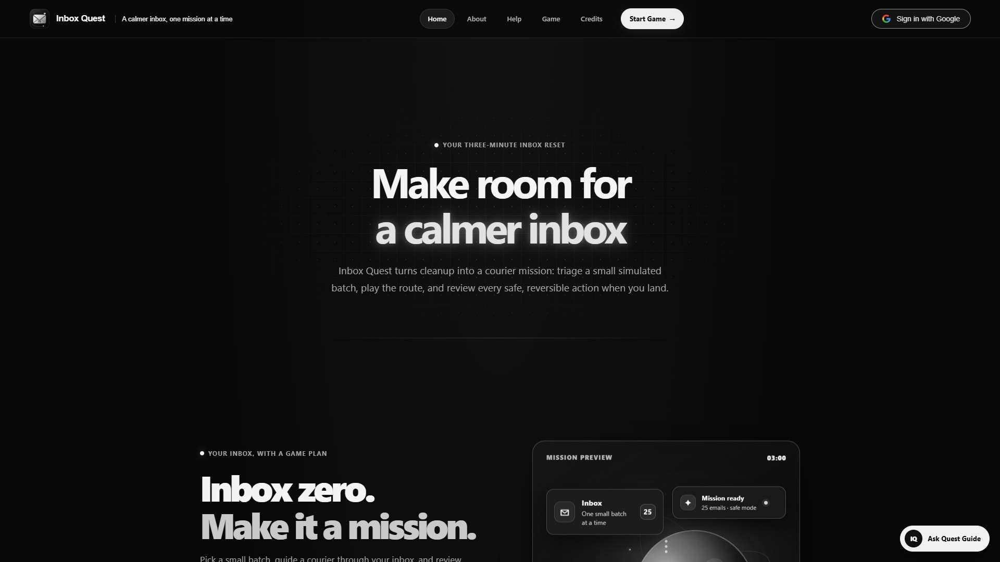

Inbox Quest.Gamified email triage & AI assistant.
An end-to-end full-stack platform transforming chaotic inbox workloads into a turn-based retro boss combat. Integrated with Gemini 3.8 Flash for sub-second thread summarization and smart VIP draft generation, backed by a 100% reversible transaction journal with zero permanent deletions.
